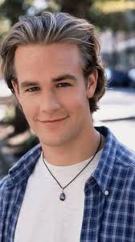
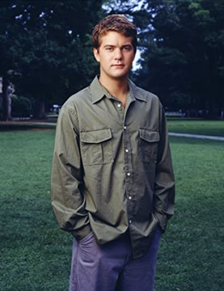

"I don't wanna wait for our lives to be over..."
— Paula Cole (the GREATEST song ever made on Earth)
hey hey HEY!!!! ✨ welcome to my page!!! my name is Jennifer (i'm 14 & a half) and this is my shrine to the greatest tv show on planet earth which is DAWSON'S CREEK!!!! ♥♥♥
me & my BFF Kayla tape every episode and watch them together every saturday morning while we eat bagel bites & dunkaroos. we have a notebook where we write down all the most romantic quotes and rate them on a scale of 1 to 10 ♥ (most of them are 10s of course)
this site is STILL under construction but i added a TON of new stuff this week so PLZZZ sign my guestbook & tell ur friends!!!! also if you are team dawson plz don't email me hate mail ✨
here are the BOYZ of my dreams!!! i printed these pics out at kinkos for $0.25 each and now they are in my locker AND on the inside of my closet door so they are the last thing i see before i go to sleep and the first thing i see when i wake up ♥

♥ ♥ ♥ ♥ ♥ ♥ ♥ ♥
♥ ♥ ♥ ♥ ♥ ♥ ♥ ♥ ♥*~* i kiss them both goodnight every nite but i kiss pacey LONGER ok don't tell anyone *~*
ok ok ok i KNOW this is the question everyone asks me at lunch so i made a chart to settle it once & for all!!!! i was very fair & balanced (mostly).
| ★ Category ★ | Joey + Dawson | Joey + Pacey |
|---|---|---|
| How It Started | childhood besties since like FOREVER. climbed up the ladder thru her window every nite. they used to sleep in the same bed when they were 8 which is SUPER sweet but also kinda weird now?? | used to HATE each other!!!!! they fought CONSTANTLY!! and then he taught her how to ballroom dance & bought her a wall to paint on?!!?! the most romantic plot ever invented btw |
| The Big Romantic Moment | they kissed in his bedroom while the steven spielberg posters watched. it was nice. it was fine. they then talked about it for FOUR entire episodes. | HE BOUGHT HER A BOAT. CALLED. TRUE. LOVE. AND THEY SAILED AWAY FOR THE WHOLE SUMMER. excuse me while i SCREAM into my pillow for the 8000th time |
| Vibes | cozy. familiar. like a flannel blanket. but also sometimes a flannel blanket is BORING and itches a little. | BUTTERFLIES!!!! the kind that make you not able to eat your dunkaroos!!!! tension. yearning. i can't breathe i need to lie down |
| How He Talks to Her | analyzes every feeling for 25 minutes & quotes a movie nobody saw. relates everything back to himself somehow?? | "I remember everything." (THREE. WORDS. that's all it took. three words and i cried for a week) |
| Hair | ok FINE i will admit it. his hair is kinda dreamy. floppy & golden & soft looking. ugh. moving ON. | messy in the GOOD way. like he just got off a boat. (probly cuz he just got off a boat.) |
| Stuff I'm Choosing to Overlook | cries a LOT. (like more than ME and i cry every day). makes everything abt himself. has a shrine to spielberg which is fine but also like... read a book??? | had a weird thing w/ his english teacher in season 1 which we DO NOT TALK ABOUT. also kinda lazy abt school. but he is GROWING ok |
| Future Husband Material?? | he'll definitely move to LA & make documentaries abt his own feelings. joey would have to listen to a director's commentary every night forever. NO THX | will buy you a boat. will remember your favorite cereal. will fight for you in front of his loser brother. WILL CHOOSE YOU OVER & OVER. swoon swoon swoon |
| Final Score (out of 10) | 5.5 / 10 (only that high cuz of nostalgia) |
11 / 10 (literally not a contest) |
look. i love dawson. he was joey's FIRST love and there will always be a place in her heart for the boy who climbed up the ladder. that is, like, science. but loving someone since you were 6 doesn't mean you have to MARRY them, ok??? sometimes the boy next door is JUST the boy next door. sometimes you're supposed to grow UP and find someone who actually CHALLENGES you and doesn't cry every time you have a single original thought.
pacey LOOKS at joey. like, actually looks at her. dawson looks at joey like she's a character in one of his movies. do you see the difference????? PACEY sees who she IS. he saw her when she was a waitress at the icehouse covered in flour and he was like "yeah that's the one." he didn't need her to be a perfect girl in a sundress sitting on a dock at sunset. he just wanted JOEY. messy stressed-out-about-college joey. JOEY!!!
also: pacey bought her a WALL. dawson never bought her ANY wall. not one wall. walls = romance, FACT. (i don't 100% know what that means but i feel it deep in my SOUL.)
here is the THING about dawson + joey: they are each other's HOME. and that's beautiful!!! that's like... your best friend!!! you should ALWAYS have a dawson in your life. but your dawson shouldn't be your HUSBAND. your husband should be the person who shows up at your door & says "let's go" & the wind blows your hair & you get on a sailboat & sail away from your problems & a sarah mclachlan song starts playing out of NOWHERE. THAT is a husband. that is PACEY.
in conclusion: joey should pick pacey, then she should pick herself (i read that in a CosmoGirl quiz!!), and then she should call dawson once a year for christmas like a normal person. that's IT. THAT'S the show. ✨
~*~ THE END (of dawson's chances) ~*~
answer these & add up your points!!! it's totally scientific i promise
3-4 pts: you're Dawson!!! a dreamer with great hair & bad timing
5-7 pts: you're Pacey!!!! underestimated softie with a heart of GOLD
8-10 pts: you're Joey!!!! you are the heroine of your own story bb
11-12 pts: you're Jen Lindley & way too cool for capeside tbh
biggest hugs & xoxo to:
plz plz plz tell me what you think of my page!!!! i read every entry & i will email you back i PROMISE!!!
★ SIGN GUESTBOOK ★ ★ VIEW GUESTBOOK ★latest entry: "OMG ur site is SO COOL i love pacey too!!!!" — Ashleyyy_07 — 4/12/02
i'm part of the ~*~ Creeker Circle ~*~ webring!!! click the buttons to visit my online friends!!!
★ Capeside✉ email me!!!! JoeyPotterLuvr69@hotmail.com
(no chain letters plz unless they are really good ones)
★ YOU ARE VISITOR # ★
(omg almost 1000!!!! when i hit 1000 i'm adding a whole new page about jen lindley promise!!)